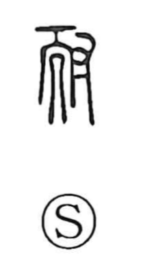

耐

Uncategorized
Kun: taeru | On: tai
to endure ・ to withstand ・ endurance
Explanation
耐 is a compound of 而 and 寸. The 而 element portrays, front-on, a figure with the topknot cut—the shaman who prays for rain. In 需 (rain + 而), this figure conveys the sense of requesting and waiting for rain. Adding 寸, the hand, shows the act of engaging or attending to that shamanic rite. From this image of sustaining and supporting the rite develops the meaning of holding up under strain—thus, to withstand and to endure.